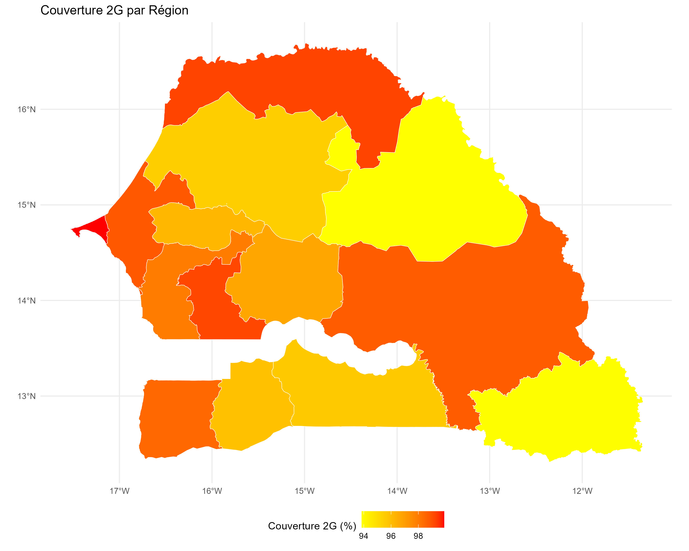
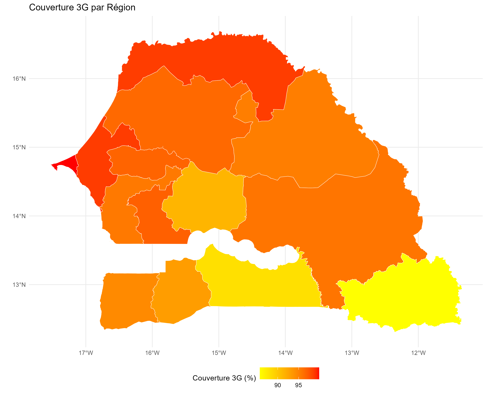
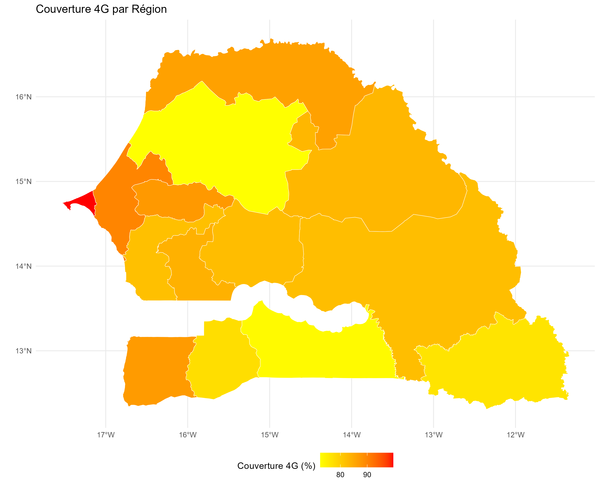

Chapitre 2 Contexte géographique et socio-économique
2.1 Présentation générale du Sénégal
Le Sénégal, situé en Afrique de l’Ouest, compte une population estimée à plus de 18 millions d’habitants en 2023 (source : ANSD). Le pays présente une grande diversité géographique, allant des zones sahéliennes du nord-est aux forêts tropicales du sud-est. Les infrastructures numériques sont principalement concentrées dans les grandes agglomérations de l’ouest (Dakar, Thiès, Mbour).
2.2 Couverture réseau : un paysage inégal
Malgré un développement significatif des réseaux 3G/4G en milieu urbain, de nombreuses zones rurales restent sous-connectées. Cette situation limite :
- L’accès aux services publics (santé, éducation)
- Les opportunités économiques locales
- Le développement de l’e-administration et des innovations numériques
2.2.1 📱 État de la couverture réseau mobile
La couverture réseau au Sénégal est marquée par des disparités importantes :
- La couverture 2G/3G/4G/5G
- La qualité du signal par opérateur
- Les débits moyens
- La latence
2.2.2 📊 Analyse par opérateur
Les trois principaux opérateurs du Sénégal (Orange, Free, Expresso) présentent des couvertures différentes :
## Warning: le package 'ggplot2' a été compilé avec la version R 4.4.3Figure 2.1: Comparaison de la couverture par opérateur
2.2.3 🌍 Cartes de couverture réseau

la région de Dakar, la couverture 2G est presque totale, tandis que les zones rurales comme Tambacounda et Kédougou souffrent d’une couverture très limitée.

Dans la carte de couverture 3G, on observe une amélioration significative dans les zones urbaines, mais des lacunes persistent dans les régions rurales.

La carte de couverture 4G montre une concentration de la couverture dans les grandes villes notamment à Dakar , tandis que les zones rurales restent largement sous-couvertes, avec des débits souvent insuffisants pour les usages modernes.
Figure X.X : Carte de couverture réseau au Sénégal (Source: nPerf)
2.3 🔍 Zones prioritaires pour l’optimisation
L’analyse de la couverture réseau révèle plusieurs zones prioritaires pour l’optimisation :
- Zones à forte densité de population
- Dakar et sa banlieue
- Thiès et ses environs
- Saint-Louis
- Zones rurales sous-couvertes
- Tambacounda
- Kédougou
- Matam
- Zones de développement économique
- Zones industrielles
- Centres commerciaux
- Zones touristiques
2.4 Présentation des régions cibles
Nous mettons l’accent sur Tambacounda, Kédougou et Matam, trois régions orientales particulièrement touchées par un faible taux de couverture réseau.
2.4.1 Tambacounda
- Population : ~826 000 habitants
- Densité : ~13 hab/km²
- Caractéristiques : Région la plus vaste du pays, forte ruralité
- Situation réseau : Zones blanches fréquentes, faible couverture 4G
2.5 Analyse socio-économique
2.5.1 Données démographiques
- La population connaît une croissance soutenue, avec un taux de fécondité élevé et une espérance de vie en augmentation.
- Plus de 60% de la population a moins de 25 ans, ce qui représente à la fois un atout (dividende démographique) et un défi (besoins accrus en éducation, emploi et services sociaux).
- Une migration rurale-urbaine accélère la concentration dans les villes de l’ouest, accentuant les disparités régionales.
2.5.2 Besoins en connectivité
- Accès inégal à la téléphonie et à Internet
- Faible accès aux services de santé, d’éducation et d’état civil en ligne
- Potentiel de développement rural par le numérique sous-exploité
Ce chapitre présente le contexte géographique et socio-économique des régions cibles de notre étude. Le chapitre suivant abordera le cadre théorique de l’optimisation du placement des antennes.